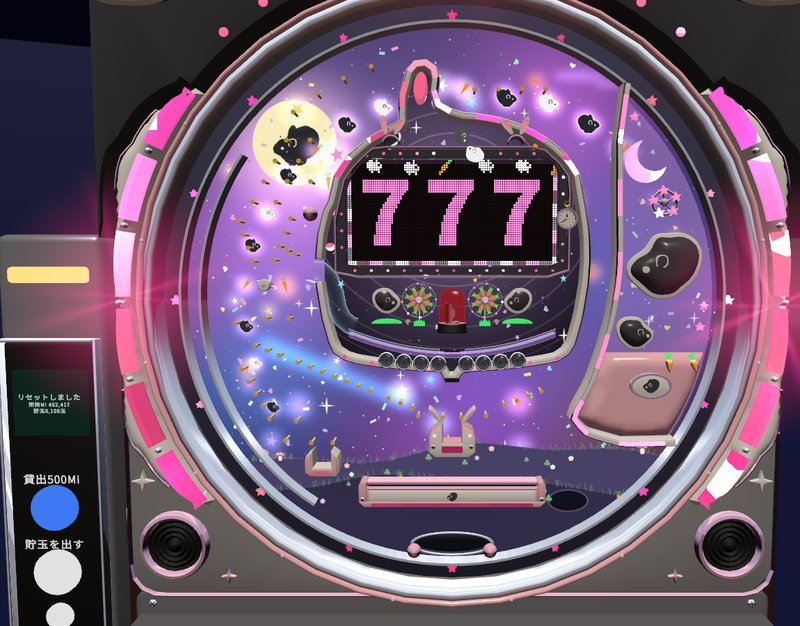
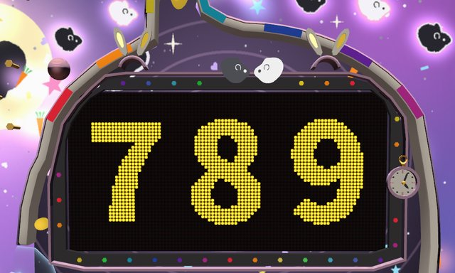
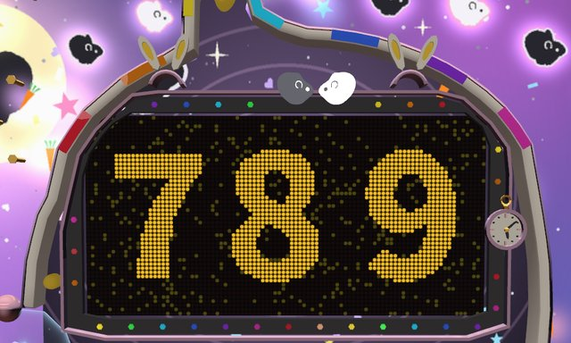
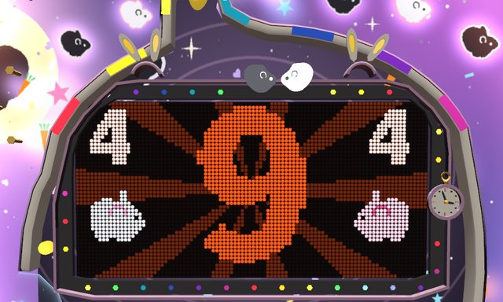
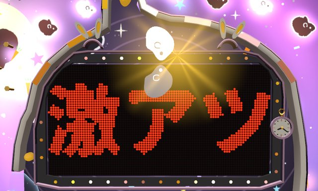
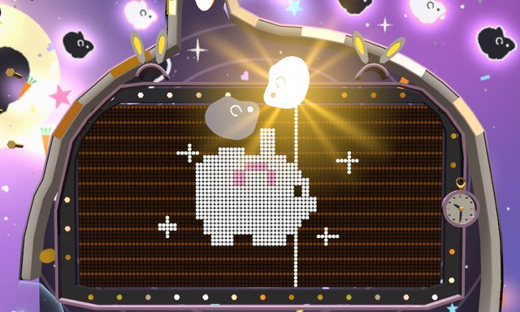
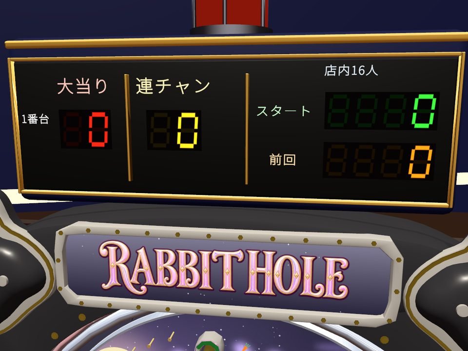

最后更新：2026-11-28（周六）
RABBIT HOLE

所有大当都进入 10 转 ST 的 ST 机。只能左打。岛的东端前排和后排各 2 台，共 4 台。
规格
| 大当概率 | 1/99.0 |
|---|---|
| ST 中 | 1/9.0 |
| ST | 10 转（大当全部进入 ST） |
| 继续率 | 约 69% |
| 回合数 | 8R、3R（1R 10 个） |
| 出珠 | 8R 约 880 颗、3R 约 330 颗 |
| 奖球 | 启动口 3、电动入口 3、大奖口 11、入赏口 4 |
| 250 颗转的次数 | 约 41 次（试算，含止打） |
| 机械割 | 约 141%（试算） |
※边界线调查中。
大当分配
| 入赏口 | 8R（ST） | 3R（ST） |
|---|---|---|
| 启动口 | 15% | 85% |
| 电动入口 | 25% | 75% |
打法
- 一直左打。盘面右侧只是装饰，没有右打
- 启动口兼作电动入口，耳朵形状的翅膀张开时更容易进
- 没有通过门。打出的珠有 55% 会变成普图的保留
| 通常 | ST 中 | |
|---|---|---|
| 普图的中奖概率 | 1/16 | 9/10 |
| 普图的旋转时间 | 12 秒 | 0.6 秒 |
| 翅膀的开放 | 0.15 秒×1 次 | 4.0 秒×2 次 |
盘面与役物
显示屏上方是兔耳和旋转的黑白兔子。显示屏下方是胡萝卜风车和警示灯。


ST（Rabbit RUSH）
- 大当之后是 10 转 ST（1/9.0）。10 转内中奖就再次进入 ST，没中就回到通常
- 进入时会出现「ラビットRUSH!」（Rabbit RUSH！）
- ST 中粉色和白色的光绕着液晶边框转，上边显示剩余转数。剩 5 转起倒数


演出信赖度
※信赖度是解析值（通常时）。50% 以上和确定用红字。
保留的颜色
| 颜色 | 信赖度 |
|---|---|
| 蓝 | 1.7% |
| 绿 | 6.8% |
| 红 | 30.5% |
| 金 | 63.6% |
| 虹 | 确定 |
Reach
| 演出 | 信赖度 |
|---|---|
| 普通 Reach | 3.1% |
| 超级 Reach | 25.0% |
| 全回转 | 确定 |
| 最终决战（PUSH） | 51.0% |
预告
| 颜色 | 胡萝卜气球预告 | 兔群预告 |
|---|---|---|
| 整体（不分颜色） | 1.3% | 18.0% |
| 白 | 0.2% | 3.4% |
| 蓝 | 0.6% | 9.9% |
| 绿 | 1.7% | 22.7% |
| 红 | 6.1% | 52.3% |
| 金 | 22.9% | 83.5% |
| 虹 | 确定 | 确定 |
阶段预告
| 演出 | 信赖度 |
|---|---|
| 到第 1 级 | 4.2% |
| 到第 2 级 | 10.3% |
| 到第 3 级 | 33.8% |
| 到第 4 级 | 66.7% |
| 到第 5 级 | 91.0% |
拟似连
| 演出 | 信赖度 |
|---|---|
| ×2 | 5.8% |
| ×3 | 28.5% |
| ×4 | 50.8% |
变动开始
| 演出 | 信赖度 |
|---|---|
| 蓄力 | 1.5% |
| 逆转 | 3.9% |
| 颤抖 | 13.0% |
| 逐个 | 22.6% |
| 闪光 | 48.6% |
| 落下 | 1.8% |
| 吸入 | 2.1% |
| 从右边 | 10.6% |
| 角色推进 | 41.1% |
数字的转法
| 演出 | 信赖度 |
|---|---|
| 倒置 | 1.3% |
| 翻页 | 5.6% |
| 滚筒 | 8.3% |
| 洗牌 | 15.6% |
| 蹦跳 | 0.7% |
预兆（在上方奔跑的角色）
| 演出 | 信赖度 |
|---|---|
| 伙伴（3 只） | 1.1% |
| 大游行（6 只） | 2.5% |
| 金 | 12.6% |
| 虹 | 65.6% |
Reach 中的预告
| 演出 | 信赖度 |
|---|---|
| 胡萝卜气球预告 | 14.5% |
| 兔群预告 | 29.8% |
超级 Reach 后半段
| 演出 | 信赖度 |
|---|---|
| 互推 | 18.2% |
| 追逐 | 11.1% |
| 钻头 | 53.9% |
| 钻洞 | 33.4% |
普通 Reach 的演法
| 演出 | 信赖度 |
|---|---|
| 标准 | 2.4% |
| 弹跳 | 4.2% |
Reach 的结束方式
| 演出 | 信赖度 |
|---|---|
| 骤停 | 6.4% |
| 滑动 | 18.5% |
| 退回 | 21.4% |
| 摇晃 | 9.2% |
| 最后一刻停住 | 29.0% |
机会目
| 演出 | 信赖度 |
|---|---|
| 311（后面的保留是大当） | 68.7% |
确定演出
虹色保留、黑屏、变动开始时的警示灯、复活、冻结、全灭灯、兔子倒退
兔子倒退是普通 Reach 中，上方条带里的兔子倒着走的演出。
演出解说
数字
数字是粉色的圆鼓鼓的字。平常的转法是「蹦跳」，数字跳起来换掉。
保留
保留灯在显示屏下方。从金色开始算激热，虹色是确定。

预告
胡萝卜气球预告偏弱，兔群预告偏热。颜色有 6 级，兔群的红色起算激热，虹色是确定。


阶段预告
上方条带里的兔子一只一只增加。第 4 级是卷帘，第 5 级数字会变成虹色。


拟似连
以连号停下，蓄力之后用「もう一回!」（再来一次！）重新转动。字的颜色依次升为绿、红、金。




超级 Reach 的流程
- Reach 和超级 Reach 的颜色是粉色。普通 Reach 的演法是标准和弹跳
- 超级 Reach 后半段的类型是追逐、互推、钻洞、钻头
- 钻洞：中间的数字掉进下面的洞，换成别的数字跳出来。4 次




最终决战与 PUSH
最终决战时，按点阵显示前面出现的 PUSH 按钮。



特殊演出、隐藏要素与小知识
※有剧透。点击展开
特殊演出（大当确定）
| 演出 | 内容 |
|---|---|
| 兔子倒退 | 普通 Reach 中，上方条带里的兔子倒着走 |
| 黑屏 | 变动开始时长时间暗转，然后直接进入全回转 |
| 冻结 | 变动开始的同时一切停住、声音消失，闪光后直接进入全回转 |
| 全灭灯 | 液晶和机台的灯饰全部熄灭、声音也没了，闪光后直接进入全回转 |
| 变动开始时的警示灯 | 旋转一开始警示灯就转 |
| 虹 | 虹色保留、虹色预告（胡萝卜气球、兔群） |
| 全回转 | 只在黑屏、冻结、全灭灯之后出现。333 或 777 对齐。转到最后，以虹色停下 |
| 复活 | 超级 Reach 里先装成没中，然后中奖 |


隐藏要素
- 8R 升格：3R 大当结束时会出现「昇格チャンス」（升格机会），3R 和 8R 互换的轮盘开始转。停在 8R 就升格。8R 里有 60% 是先装成 3R 再升格，真正的 3R 里有 25% 是挑战升格但失败
- 保留先读：保留进来时，看到的颜色可能比真实颜色低 1～2 级。等待期间会一级一级往上升，没升完的部分会在变动开始时的机会提升里补上。变动开始时只是白色保留闪一下，就是假演出
- 机会区：先读的区间。前面有 2 个以上保留时才会出现。没中的时候，只有会变成超级 Reach 的那几转才出现
小知识
- 机会目 311：没有 Reach 的未中，停在 311 时会发出金光并弹跳。不会碰巧停在 311
- ST 中不会出现预告、阶段预告、拟似连和变动开始演出
数据计数器

机台上方有大当、连庄、开始、上次 4 项和店内人数。